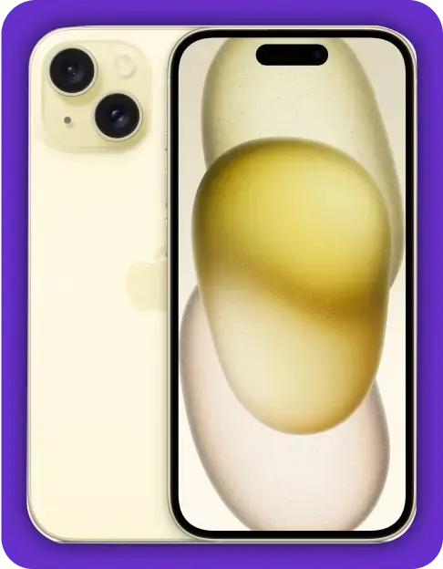

Why Play Ludo Real Cash Game on Ludo King Club
Trusted Online Ludo Real Money Game: Reviews
Enjoy a smooth, fun, and safe experience with Ludo Money games on Ludo King Club. Read the Ludo Game Reviews below:

Playing online Ludo on Ludo King Club lets me challenge my friends anytime, anywhere. It’s a fantastic way to stay connected and competitive with just a few taps on my phone.

Entered a Ludo game with only ₹ 1 and won an iPhone 15. Cash withdrawals were a breeze!

Join the fun by playing Ludo for just ₹ 1; I tried Ludo Mahasangram and won iPhone 15.

I've been playing Ludo on Ludo King Club since 2023. One day, I secured 2nd rank in the Ludo Supreme League and won ₹20,000. Thank you, Ludo King Club.

Ludo King Club’s Ludo online games are incredibly user-friendly. I love how I can start with just ₹1 and potentially win big, all within 10 minutes!

After playing Ludo on Ludo King Club for several months, I can confidently say it's one of the most secure gaming platforms. I would rate it 5 out of 5 stars for its seamless gameplay and trustworthy transactions.
How to Play Ludo Online on Ludo King Club
Ludo involves moving four tokens around the board to reach the center, with players taking turns rolling dice.The player who places all tokens in the center wins!
While playing Ludo real cash games on Ludo King Club, you can win by earning the most points or ranking high on the leaderboard instead of just reaching the center.
Here are the steps on How to play Ludo on the best Ludo app:
Step 1

Step 2
Step 3
Step 4
Step 5
Step 6
Choose Ludo Game Board Online Format
Embark on a thrilling journey with various Ludo formats designed to cater to your competitive spirit. Choose from popular options such as Ludo Supreme (also known as Ludo Supreme Gold), Ludo Ninja, Ludo Turbo, and Ludo Supreme League. Explore diverse gameplay modes in every game, each offering its own set of challenges and opportunities to win exciting prize pools.
You can play 2-player, 3-player, or 4-player mode, with 1-winner, 2-winner, and 3-winner formats. Moreover, the time taken to complete the game is just 10 minutes.
You can choose to play with or without an entry fee. In fact, even for a free online ludo game, you do stand a chance to win Ludo money. Moreover, you can swiftly withdraw your accumulated Ludo win cash through UPI.
So get started with ludo online free games on Ludo King Club!
START LUDO GAMING WITH Ludo King Club
Start playing real money Ludo game by selecting your desired token and advancing it toward the home area based on the rolled dice number. Unlike traditional rules, there's no need to roll a 6 to kick-start the excitement - simply tap on your chosen token to make your move.
Here are some common rules to play online:
- No need to roll a 6 to start the game.
- 1 box moved = 1 point.
- Token reaches home = 56 points or 43 points.
- 3 times skipping chance = disqualification.
- Keep your token safe by landing on squares marked with a “star” or by placing two of your tokens in the same square.
- Extra chance to capture opponents’ tokens and take tokens home.
CAPTURE LUDO TOKENS
Become a master of strategic gameplay in the world of online Ludo cash game by skillfully capturing your opponent’s Ludo tokens. When you land your token on theirs, witness their piece being sent back to the yard, losing all accumulated points. However, be cautious; if your opponent’s token is in a safe zone or they’ve created a block, you cannot capture it.
When participating in the game Ludo Supreme League, there are no opponent’s tokens to capture. Instead, a specific number of tokens are placed on the board, each worth a certain amount of points. Upon successfully capturing these tokens, you earn points accordingly.
So, embrace the excitement and challenge of Ludo gaming as you navigate through strategic moves and exciting gameplay twists.
EARN LUDO POINTS
Engage in an exciting game of Ludo Supreme, Ludo Ninja, or Ludo Turbo where each successful move gives you 1 point, and taking the token home contributes 56 points. Yet, the thrill doesn’t stop there.
Venturing into the Ludo Supreme League offers an even more interesting gameplay. In this strategic Ludo in online variant, every box moved earns you a point, with the bonus of snatching the value of a token by cutting it during the play. There are no bonus points to take tokens home.
UNLOCK EXTRA LUDO MOVES
Rolling 6 grants you an extra move! However, please note that this rule is not applicable in the Ludo Supreme League. In all four variations of Ludo, you’ll receive an additional move either to bring your token home or when cutting an opponent’s token.
WIN LUDO GAME
To emerge victorious in Ludo, aim to accumulate the maximum points within a specified timeframe. Each game comes with its unique timeframe, challenging you to showcase your strategic prowess and claim ultimate Ludo supremacy. Enter the competitive world of Ludo gaming, where every move counts, and triumph awaits the strategic player. So, what are you waiting for!
Ludo King Club APP DOWNLOAD
Here’s a step-by-step process for downloading and playing ludo board game online:
- Click Download Button: Locate and click on the download button on this page.
- Install and Register: Once the app is downloaded, install it on your device. After installation, register for a new account if you haven’t already.
- Choose the Game: Open the app and choose the game mode you want to play.
- Start Winning: Post choosing the Ludo money game, begin the game, and showcase your skills to start winning Ludo real cash.
Learn more about the Ludo game download process for Android & iOS and start winning Ludo cash on your device.
Features of Ludo King Club Real Cash Game
Here are some key features of Ludo King Club games:
- Win Real Money: Challenge yourself in money game ludo with potential winnings reaching up to Rs. 10 lakhs.
- Easy withdrawal: Quick and smooth Ludo money withdrawal process through UPI and Bank transfer.
- Skill-based Gaming: Ludo cash games on Ludo King Club are certified from the All India Gaming Federation (AIGF) as a game of skill. Explore Skill Certifications validating the commitment to promoting talent-driven competitions.
- Fair Play Guaranteed: Experience fair and challenging gameplay with an RNG-Certified Ludo cash game.
- Bot-Free: Engage with Indian players on a bot-free platform for genuine gaming experiences.
- 24/7 Customer service: Access dedicated customer support for any queries or concerns.
- Safety & Security: Ludo King Club prioritizes security and operates within legal standards for a secure gaming environment. Refer to the Privacy Policy for detailed information on data safeguarding.
- Boost Your Winnings: Utilize Ludo referral cash and bonuses to enhance your gameplay excitement.
WHY IS LUDO ONLINE SO POPULAR?
Ludo Online has gained popularity for several reasons:
- Accessibility: It is easily accessible on various platforms, including smartphones, tablets, and computers. This accessibility allows players to enjoy the game at any time and from anywhere, making it a convenient choice for skill-based gaming.
- Social Interaction: The game often includes features that allow players to compete against friends or other online players. This social aspect adds an element of competition and interaction, making the gaming experience more enjoyable.
- Nostalgia: Ludo is a classic board game that many people have fond memories of playing during their childhood. The online Ludo version allows players to relive those nostalgic moments while also introducing the game to new generations.
- Simple Gameplay: The rules of Ludo game board online are simple and easy to understand, making it accessible to players of all ages and skill levels. The straightforward gameplay ensures that players can quickly pick up the game and start having fun without a steep learning curve.
- Variety of Modes: Many online versions offer different game modes, such as classic, quick play, and multiplayer. This variety keeps the game fresh and engaging, allowing players to choose the mode that best suits their preferences. You can even play Ludo online free mode!
- Competitive Spirit: The game often includes leaderboards, rankings, and rewards, fostering a sense of competition among players. This aspect motivates players to improve their skills and strive for the top spot, increasing the game's popularity.
Overall, the combination of accessibility, social interaction, nostalgia, simple gameplay, variety of modes, and competitive spirit contributes to the popularity of Ludo.
Ludo: Without Dice
For those who relish Ludo game board online strategic planning, Ludo Ninja awaits, providing a unique dice-less format. Get to know the upcoming values on the dice and adjust your strategy to win Ludo cash.
Ludo: with dice!
Play fast-paced, dice-centric Ludo online cash games on Ludo Supreme, Ludo Turbo, and Ludo Supreme League. Each game comes with a time limit, ensuring non-stop action and quick wins. Gain the upper hand over your rivals by mastering your preferred variant within the exciting world of Ludo apps.
Ludo: limited moves
Enjoy the thrill of restricted moves, where every decision counts with Ludo Turbo, Ludo Supreme League, and Ludo Ninja. If you're drawn to multiplayer online tournaments with limited moves and leaderboard features, participate in Ludo Supreme League and stand a chance to win Ludo real money.
Ludo: Limited time
Play free Ludo online games or with an entry fee within a specified time limit on Ludo Supreme. Get the option to play Ludo online with friends on Ludo King Club—just download the Ludo app, find the 'play with friends' section, invite your pals, and start winning Ludo money.
LUDO GAME TIPS AND TRICKS
Elevate your experience with top 20 Ludo Tips and Tricks to Win free ludo games online. Here are the top Ludo game online winning tricks:
- Strategize your moves
- Move multiple tokens
- Protect your best man
- Know your opponent
- Hone your skills
Armed with these strategic insights, you are poised to master the art of online Ludo and emerge as a true Ludo champion. The path to success starts with mastering these proven strategies. Are you ready for the Ludo game board online challenge?
FAQs About Ludo Board Game Online
Who invented Ludo?
Ludo originates in India, where it was traditionally played by royalty. It is widely accepted that Ludo was derived from an Indian game called Pachisi, which dates back over a thousand years. Pachisi was traditionally played on a cloth board, and cowrie shells were used as dice. The modern version of Ludo as we know it today was popularized and standardized by the British in the early 20th century. Moreover, Ludo is frequently misspelled as lodo, Ledo, lido, Loodo, and various other variations.
Why play ludo on mobile?
Playing Ludo on your mobile device is not only entertaining, but it also offers numerous advantages. It promotes strategic thinking and enhances your problem-solving skills. It also allows you to connect with people worldwide, fostering social interactions. Moreover, the convenience of playing Ludo on your phone means you can enjoy the game anytime, anywhere. Look at the benefits of playing Ludo.
Can I play Ludo online for free?
Yes. There are many websites and mobile apps that offer free Ludo games. Some of these platforms may have advertisements or in-app purchases, but the basic gameplay is usually free.
How many players play in the Ludo game?
Ludo can be enjoyed by anywhere from two to four participants. If you choose to play Ludo online, a single-player mode is available, significantly expanding your gameplay options. Experience the thrill of strategic decision-making with this classic game, whether aiming to play Ludo alone or in a group.
What is Ludo gameplay time?
What are the rules of Ludo?
Ludo rules may show slight variations based on the specific version you’re engaging with. The fundamental principle of playing ludo involves navigating your tokens around the board, guided by the outcome of your dice roll.
Is playing ludo Online Safe?
How to become Ludo King?
To become a Ludo King, focus on strategy, patience, and adaptability. Develop your gameplay skills through practice and observation. Study the opponent’s moves and plan moves strategically. Be patient during setbacks, adapt your tactics as needed, and seize opportunities to secure victory on the Ludo board.
Which ludo game gives real money?
You can play Ludo for real money on several online platforms and mobile apps. These platforms often operate in regions where the real cash ludo game is legal and regulated. However, it’s essential to note that the availability of real-money Ludo games may vary depending on your location and local laws.
One platform you can explore is Ludo King Club. It offers 4 variations of the Ludo game where players can compete against each other for cash prizes. Players can win money by participating in tournaments and challenges and showcasing their skills. It’s a fun and competitive way to enjoy Ludo while having the chance to win some cash prizes.
How to play Ludo with friends?
To play Ludo with friends on Ludo King Club, sign up or log in to your Ludo King Club account. Then, head to the play with friends’ section on the app. Invite your friends to join you in a game, either by sending them a link or inviting them through their Ludo King Club usernames. Once everyone has joined, start the game, and enjoy playing Ludo in real time with your friends on Ludo King Club’s platform.
Which are the common terms of ludo?
Common terms in Ludo include home, token, move, safe zone, capture, bar, roll, and blockade.
Can I win real cash in ludo game?
Why is Ludo considered a game of skill?
How can I win a Ludo game?
Will I receive a refund if I leave a match midway?
Which Ludo King Club games are available for free?
What is the best and safest app to play Ludo for real money in India?
Get ₹ 10 Free